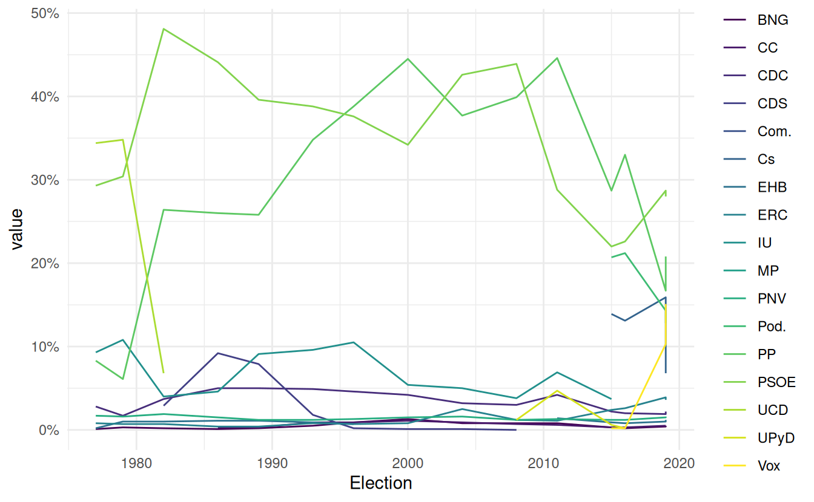
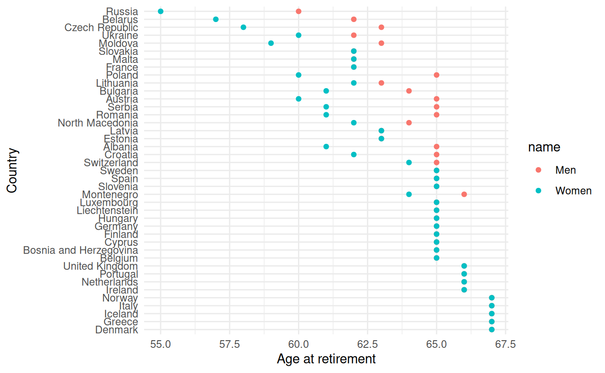

2 A primer on Webscraping
Webscraping is the subtle art of being a ninja. You need not be an expert on many things but should have a swiss army knife of skills when it comes to data cleaning and data manipulation. String manipulations, data subsetting and clever tricks rather than exact solutions will be your companion on your day to day scraping needs. Throughout this chapter I’ll give you a one-to-one tour on what to expect when webscraping out in the wild. For that reason, this book will skip the usual ‘start from the basics’ sections to directly webscrape a website and see results from your efforts right away. Ready? Let’s get going then.
The aim of this primer is to create a plot like this one:
This plot shows the election results for all political parties in Spain since 1978. We do not have data on this on your local computer so we’ll need to find this online and scrape it. By scrape I specifically mean to write down a little R script that will go to a website for you and manually select the data points that you tell it to. Wikipedia has such data but throughout this book we will work mostly with local copies of websites as outlined in Section 1.1.
2.1 Getting website data into R
Our very own scrapex package has a function called history_elections_spain_ex() which points to a locally saved copy of the Wikipedia website that will persist over time (the original online link is https://en.wikipedia.org/wiki/Elections_in_Spain). Let’s load all packages and take a look at the website.
library(scrapex)
library(rvest)
library(httr)
library(dplyr)
library(tidyr)
library(stringr)
library(ggplot2)
link <- history_elections_spain_ex()
link[1] "/home/runner/work/_temp/renv/cache/v5/linux-ubuntu-noble/R-4.6/x86_64-pc-linux-gnu/scrapex/0.0.1.9999/ef820a8572c592077efb4c89177e86bd/scrapex/extdata/history_elections_spain//Elections_Spain.html"This is where the website is saved locally on your computer. We can directly visualize this on our browser like this:
browseURL(prep_browser(link))
On the bottom right you can see the plot that we’d like to generate. This plot has all political parties since 1978 up until the 2020 elections. The first step in webscraping is to ‘read’ the website into R. We can do that with the read_html function. We pass the website link (the typical https://en.wikipedia.org string) but since we already have the website locally, we just pass it the path to the local website:
Before we do that, I will set something called my User-Agent. The User-Agent is who you are. It is good practice to identify the person who is scraping the website because if you’re causing any trouble on the website, the website can directly identify who is causing problems. You can figure out your user agent here and paste it in the string below. This string contains information about your computer/browser such that the owners of the website can know who you are. I also add my name/email to make identification easier:
set_config(
user_agent("Mozilla/5.0 (X11; Ubuntu; Linux x86_64; rv:105.0) Gecko/20100101 Firefox/105.0")
)
html_website <- link %>% read_html()
html_website{html_document}
<html class="client-nojs" lang="en" dir="ltr">
[1] <head>\n<meta http-equiv="Content-Type" content="text/html; charset=UTF-8 ...
[2] <body class="mediawiki ltr sitedir-ltr mw-hide-empty-elt ns-0 ns-subject ...We can’t understand much from the output from read_html because the HTML code behind the website is very long. read_html only shows the top level details. In any case, we don’t need to understand these details at first. Now that we have the website already in R we need to figure out where is the actual data on elections on the website. If you scroll down, near the end of the website you’ll see a table like this one:

This is precisely the data we need. This contains the election results for all parties since 1978. The rvest package (which we have already loaded) has a very handy function called html_table() which automatically extracts all tables from a website into R. However, html_table() needs to know which website we’re working with so we need to pass it the html_website we read in the previous step:
all_tables <-
html_website %>%
html_table()html_table() reads all tables so there’s a lot of information in all_tables (a list with 10 tables to be more precise). I won’t print the entire R object because it’s too verbose but I encourage the reader to write all_tables in the R console and explore all the tables that it scraped automatically. I did that myself to understand where is the information that we’re looking for. After carefully inspecting all tables, I figured out that the table we’re looking for is in slot 5:
elections_data <- all_tables[[5]]
elections_data# A tibble: 16 × 18
Election `UCD[a]` PSOE `PP[b]` `IU[c]` `CDC[d]` PNV `ERC[e]` `BNG[f]`
<chr> <chr> <dbl> <dbl> <chr> <dbl> <dbl> <dbl> <dbl>
1 Election "" NA NA "" NA NA NA NA
2 1977 "34.4" 29.3 8.3 "9.3" 2.8 1.7 0.8 0.1
3 1979 "34.8" 30.4 6.1 "10.8" 1.7 1.6 0.7 0.3
4 1982 "6.8" 48.1 26.4 "4.0" 3.7 1.9 0.7 0.2
5 1986 "Dissolved" 44.1 26 "4.6" 5 1.5 0.4 0.1
6 1989 "Dissolved" 39.6 25.8 "9.1" 5 1.2 0.4 0.2
7 1993 "Dissolved" 38.8 34.8 "9.6" 4.9 1.2 0.8 0.5
8 1996 "Dissolved" 37.6 38.8 "10.5" 4.6 1.3 0.7 0.9
9 2000 "Dissolved" 34.2 44.5 "5.4" 4.2 1.5 0.8 1.3
10 2004 "Dissolved" 42.6 37.7 "5.0" 3.2 1.6 2.5 0.8
11 2008 "Dissolved" 43.9 39.9 "3.8" 3 1.2 1.2 0.8
12 2011 "Dissolved" 28.8 44.6 "6.9" 4.2 1.3 1.1 0.8
13 2015 "Dissolved" 22 28.7 "3.7" 2.2 1.2 2.4 0.3
14 2016 "Dissolved" 22.6 33 "[k]" 2 1.2 2.6 0.2
15 Apr. 2019 "Dissolved" 28.7 16.7 "[l]" 1.9 1.5 3.9 0.4
16 Nov. 2019 "Dissolved" 28 20.8 "[l]" 2.2 1.6 3.6 0.5
# ℹ 9 more variables: `EHB[g]` <chr>, `CDS[h]` <chr>, `CC[i]` <dbl>,
# UPyD <chr>, Cs <chr>, Com. <chr>, `Pod.[j]` <dbl>, Vox <dbl>, MP <dbl>You can see it’s the same table we saw on the website here:
2.2 Data cleaning
On the first column we have the year and on each column we have the name of the political party. However, the table has some problems that we need to fix. Let’s outline the things that we need to fix:
- The first row of the table is empty
- The
Electioncolumn is acharactercolumn because in row 15 and 16 it contains monthsApr.andNov.. - For each political party column there are values which are not numbers (these are usually values representing footnotes such as
[k]and others such asDissolvedfor parties which dissolved over the years). This forces some columns to becharactercolumns where in fact we want all of them to be of classnumericto be able to visualize them in a plot. - Column names also have these footnote values in their names. We probably should remove them.
As I recalled in the first paragraphs of this primer, to be able to do webscraping, you need to be a data ninja. You’ll need to become familiar with the basics of regular expressions (this is a fancy name for manipulating strings) and also on cleaning data. Here we’ll use the very basics of string manipulation, it’s fine if you feel completely lost. Just work hard at it and little by little you’ll learn tricks along the way.
The first thing we’d want to do is to keep only the columns which are character. Most of our problems are related to these columns:
elections_data %>% select_if(is.character)# A tibble: 16 × 8
Election `UCD[a]` `IU[c]` `EHB[g]` `CDS[h]` UPyD Cs Com.
<chr> <chr> <chr> <chr> <chr> <chr> <chr> <chr>
1 Election "" "" "" "" "" "" ""
2 1977 "34.4" "9.3" "0.2" "" "" "" ""
3 1979 "34.8" "10.8" "1.0" "" "" "" ""
4 1982 "6.8" "4.0" "1.0" "2.9" "" "" ""
5 1986 "Dissolved" "4.6" "1.1" "9.2" "" "" ""
6 1989 "Dissolved" "9.1" "1.1" "7.9" "" "" ""
7 1993 "Dissolved" "9.6" "0.9" "1.8" "" "" ""
8 1996 "Dissolved" "10.5" "0.7" "0.2" "" "" ""
9 2000 "Dissolved" "5.4" "Boycotted" "0.1" "" "" ""
10 2004 "Dissolved" "5.0" "Banned" "0.1" "" "" ""
11 2008 "Dissolved" "3.8" "Banned" "0.0" "1.2" "0.2" ""
12 2011 "Dissolved" "6.9" "1.4" "Dissolved" "4.7" "Did… "0.5"
13 2015 "Dissolved" "3.7" "0.9" "Dissolved" "0.6" "13.… "[k]"
14 2016 "Dissolved" "[k]" "0.8" "Dissolved" "0.2" "13.… "[k]"
15 Apr. 2019 "Dissolved" "[l]" "1.0" "Dissolved" "Did not r… "15.… "0.7"
16 Nov. 2019 "Dissolved" "[l]" "1.2" "Dissolved" "[m]" "6.8" "[n]"We can see all the different string values in those columns. What we’d want is to replace all non-numeric values with NAs. That way when we convert these columns to numbers we won’t lose any information. How can we remove these values? I went through each of these columns and wrote down the character values that we need to remove:
wrong_labels <- c(
"Dissolved",
"[k]",
"[l]",
"[m]",
"n",
"Banned",
"Boycotted",
"Did not run"
)Now we just need to apply some regular expression (regex from now on) skills to remove them. Let’s explain what we want to do. In the regex world the | stands for OR. This means that if we want to find all the words Banned and Boycotted and replace them with NAs we could write Banned|Boycotted. This literally means Banned OR Boycotted. We can take the previous wrong_labels vector and insert a | between the wrong labels:
wrong_labels <- paste0(wrong_labels, collapse = "|")
wrong_labels[1] "Dissolved|[k]|[l]|[m]|n|Banned|Boycotted|Did not run"This effectively says: Dissolved OR [k] OR [l], …
With this string we can use the function str_replace_all to replace all wrong labels with NAs. Here’s how we’d do it:
semi_cleaned_data <-
elections_data %>%
mutate_if(
is.character,
~ str_replace_all(string = .x, pattern = wrong_labels, replacement = NA_character_)
)Alright, don’t get stressed, we’ll explain this line by line. The second line references our data (elections_data, the one we’ve been working with until now). The third line uses the mutate_if function which works by applying a function to columns that we subset based on a criteria. Let’s break down that explanation even further. You can actually read the code from above like this:
- For the
elections_data - For columns which are
charactercolumns (mutate_if(is.character, ...)) - Apply a transformation (
mutate_if(is.character, ~ str_replace_all(...)))
For our example this means that for all character columns, the str_replace_all function will be applied. This function replaces all wrong_labels with NAs. We can see this right away:
semi_cleaned_data %>% select_if(is.character)# A tibble: 16 × 8
Election `UCD[a]` `IU[c]` `EHB[g]` `CDS[h]` UPyD Cs Com.
<chr> <chr> <chr> <chr> <chr> <chr> <chr> <chr>
1 <NA> "" "" "" "" "" "" ""
2 1977 "34.4" "9.3" "0.2" "" "" "" ""
3 1979 "34.8" "10.8" "1.0" "" "" "" ""
4 1982 "6.8" "4.0" "1.0" "2.9" "" "" ""
5 1986 <NA> "4.6" "1.1" "9.2" "" "" ""
6 1989 <NA> "9.1" "1.1" "7.9" "" "" ""
7 1993 <NA> "9.6" "0.9" "1.8" "" "" ""
8 1996 <NA> "10.5" "0.7" "0.2" "" "" ""
9 2000 <NA> "5.4" <NA> "0.1" "" "" ""
10 2004 <NA> "5.0" <NA> "0.1" "" "" ""
11 2008 <NA> "3.8" <NA> "0.0" "1.2" "0.2" ""
12 2011 <NA> "6.9" "1.4" <NA> "4.7" <NA> "0.5"
13 2015 <NA> "3.7" "0.9" <NA> "0.6" "13.9" <NA>
14 2016 <NA> <NA> "0.8" <NA> "0.2" "13.1" <NA>
15 Apr. 2019 <NA> <NA> "1.0" <NA> <NA> "15.9" "0.7"
16 Nov. 2019 <NA> <NA> "1.2" <NA> <NA> "6.8" <NA>All columns are still characters, but don’t have any of the wrong labels that we identified before. The only problem we have is that the Election column has the months Apr. and Nov. and we won’t be able to convert that to numeric. We can apply our regex trick of saying replace Apr. OR Nov. with an empty string. Let’s do that:
semi_cleaned_data <-
semi_cleaned_data %>%
mutate(
Election = str_replace_all(string = Election, pattern = "Apr. |Nov. ", replacement = "")
)Let’s check again that everything worked as expected:
semi_cleaned_data %>% select_if(is.character)# A tibble: 16 × 8
Election `UCD[a]` `IU[c]` `EHB[g]` `CDS[h]` UPyD Cs Com.
<chr> <chr> <chr> <chr> <chr> <chr> <chr> <chr>
1 <NA> "" "" "" "" "" "" ""
2 1977 "34.4" "9.3" "0.2" "" "" "" ""
3 1979 "34.8" "10.8" "1.0" "" "" "" ""
4 1982 "6.8" "4.0" "1.0" "2.9" "" "" ""
5 1986 <NA> "4.6" "1.1" "9.2" "" "" ""
6 1989 <NA> "9.1" "1.1" "7.9" "" "" ""
7 1993 <NA> "9.6" "0.9" "1.8" "" "" ""
8 1996 <NA> "10.5" "0.7" "0.2" "" "" ""
9 2000 <NA> "5.4" <NA> "0.1" "" "" ""
10 2004 <NA> "5.0" <NA> "0.1" "" "" ""
11 2008 <NA> "3.8" <NA> "0.0" "1.2" "0.2" ""
12 2011 <NA> "6.9" "1.4" <NA> "4.7" <NA> "0.5"
13 2015 <NA> "3.7" "0.9" <NA> "0.6" "13.9" <NA>
14 2016 <NA> <NA> "0.8" <NA> "0.2" "13.1" <NA>
15 2019 <NA> <NA> "1.0" <NA> <NA> "15.9" "0.7"
16 2019 <NA> <NA> "1.2" <NA> <NA> "6.8" <NA>There we go, we don’t have strings in any of the columns anymore. Let’s transform all columns into numeric and remove that first row that is empty:
semi_cleaned_data <-
semi_cleaned_data %>%
mutate_all(as.numeric) %>%
filter(!is.na(Election))
semi_cleaned_data# A tibble: 15 × 18
Election `UCD[a]` PSOE `PP[b]` `IU[c]` `CDC[d]` PNV `ERC[e]` `BNG[f]`
<dbl> <dbl> <dbl> <dbl> <dbl> <dbl> <dbl> <dbl> <dbl>
1 1977 34.4 29.3 8.3 9.3 2.8 1.7 0.8 0.1
2 1979 34.8 30.4 6.1 10.8 1.7 1.6 0.7 0.3
3 1982 6.8 48.1 26.4 4 3.7 1.9 0.7 0.2
4 1986 NA 44.1 26 4.6 5 1.5 0.4 0.1
5 1989 NA 39.6 25.8 9.1 5 1.2 0.4 0.2
6 1993 NA 38.8 34.8 9.6 4.9 1.2 0.8 0.5
7 1996 NA 37.6 38.8 10.5 4.6 1.3 0.7 0.9
8 2000 NA 34.2 44.5 5.4 4.2 1.5 0.8 1.3
9 2004 NA 42.6 37.7 5 3.2 1.6 2.5 0.8
10 2008 NA 43.9 39.9 3.8 3 1.2 1.2 0.8
11 2011 NA 28.8 44.6 6.9 4.2 1.3 1.1 0.8
12 2015 NA 22 28.7 3.7 2.2 1.2 2.4 0.3
13 2016 NA 22.6 33 NA 2 1.2 2.6 0.2
14 2019 NA 28.7 16.7 NA 1.9 1.5 3.9 0.4
15 2019 NA 28 20.8 NA 2.2 1.6 3.6 0.5
# ℹ 9 more variables: `EHB[g]` <dbl>, `CDS[h]` <dbl>, `CC[i]` <dbl>,
# UPyD <dbl>, Cs <dbl>, Com. <dbl>, `Pod.[j]` <dbl>, Vox <dbl>, MP <dbl>There we go, all columns are of class numeric and look nice and tidy for plotting. Last step we need to take is to remove the footnote values from the party column names. For doing that we’ll need some more advanced regex patterns that I’ll explain briefly (Chapter 4) will elaborate the concept of regex more in depth). The pattern we’ll use is [.+] which means: detect any character (this is the .) that is repeated one or more times (this is the +) and is enclosed within brackets (this is the [] part). So for example, the string Election won’t find any match because it does not have a bracket with any values repeated one or more times. However, the column name UCD[a] does have this pattern: it contains two brackets [] that have a value that is repeated one time (a).
There’s also a last trick that we need to take into account which is that brackets ([]) have a special meaning in the regex world. To signal to regex that you want to match brackets literally, you need to escape them with the backslash (\\). So the final regex pattern we want to match is: \\[.+\\]. Let’s use it to rename all columns:
semi_cleaned_data <-
semi_cleaned_data %>%
rename_all(~ str_replace_all(.x, "\\[.+\\]", ""))
semi_cleaned_data# A tibble: 15 × 18
Election UCD PSOE PP IU CDC PNV ERC BNG EHB CDS CC
<dbl> <dbl> <dbl> <dbl> <dbl> <dbl> <dbl> <dbl> <dbl> <dbl> <dbl> <dbl>
1 1977 34.4 29.3 8.3 9.3 2.8 1.7 0.8 0.1 0.2 NA NA
2 1979 34.8 30.4 6.1 10.8 1.7 1.6 0.7 0.3 1 NA NA
3 1982 6.8 48.1 26.4 4 3.7 1.9 0.7 0.2 1 2.9 NA
4 1986 NA 44.1 26 4.6 5 1.5 0.4 0.1 1.1 9.2 0.3
5 1989 NA 39.6 25.8 9.1 5 1.2 0.4 0.2 1.1 7.9 0.3
6 1993 NA 38.8 34.8 9.6 4.9 1.2 0.8 0.5 0.9 1.8 0.9
7 1996 NA 37.6 38.8 10.5 4.6 1.3 0.7 0.9 0.7 0.2 0.9
8 2000 NA 34.2 44.5 5.4 4.2 1.5 0.8 1.3 NA 0.1 1.1
9 2004 NA 42.6 37.7 5 3.2 1.6 2.5 0.8 NA 0.1 0.9
10 2008 NA 43.9 39.9 3.8 3 1.2 1.2 0.8 NA 0 0.7
11 2011 NA 28.8 44.6 6.9 4.2 1.3 1.1 0.8 1.4 NA 0.6
12 2015 NA 22 28.7 3.7 2.2 1.2 2.4 0.3 0.9 NA 0.3
13 2016 NA 22.6 33 NA 2 1.2 2.6 0.2 0.8 NA 0.3
14 2019 NA 28.7 16.7 NA 1.9 1.5 3.9 0.4 1 NA 0.5
15 2019 NA 28 20.8 NA 2.2 1.6 3.6 0.5 1.2 NA 0.5
# ℹ 6 more variables: UPyD <dbl>, Cs <dbl>, Com. <dbl>, Pod. <dbl>, Vox <dbl>,
# MP <dbl>The dataset is ready to plot. It’s tidy and clean. Let’s plot it:
# Pivot from wide to long to plot it in ggplot
cleaned_data <-
semi_cleaned_data %>%
pivot_longer(-Election, names_to = "parties")
# Plot it
cleaned_data %>%
ggplot(aes(Election, value, color = parties)) +
geom_line() +
scale_y_continuous(labels = function(x) paste0(x, "%")) +
scale_color_viridis_d() +
theme_minimal()
So there you have it. This primer gave you a very direct experience on what webscraping involves. It involves reading data from a website into R, manually or automatically finding the chunks of data you want to scrape, extracting those, and cleaning them enough to be able to do something useful with them. In the next chapter you’ll see more in depth how to work with HTML and XML data, as you’ll need some intuition on how to find stuff within an HTML or XML document.
2.3 Exercises
- Europe has an aging problem and the mandatory retirement age is being constantly revised. In the
scrapexpackage there’s a copy of the “Retirement in Europe” Wikipedia website https://en.wikipedia.org/wiki/Retirement_in_Europe. You can find the local link in the functionretirement_age_europe_ex(). Can you inspect the website, parse the table and replicate the plot below? (Hint: you might need the functionstr_subfrom thestringrpackage).

- When parsing the elections table, we parsed all tables of the Wikipedia table into
all_tables. Among all those tables, there’s one table that documents the years in which there were general elections, presidential elections, European elections, local elections, regional elections and referendums in Spain. Can you extract into a numeric vector all the years in which there were general elections in Spain? (Hint: you might needstr_splitand otherstringrfunctions and the resulting vector should start with 1810 and end with 2019).
- Building on your previous code, can you tell me the years where local elections, European elections and general elections overlapped?